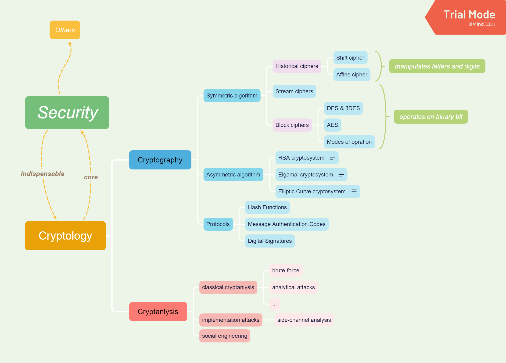

为什么要来学习密码学?
一个比较直接的原因是打CTF的需要。CTF线上解题模式里面，一般Crypto占的分挺多的（也就仅次于Web、Re和PWN），有的时候做出一道没人解出的Crypto其实也挺拉分的。
一个根本的因素是对这个方向比较感兴趣，那种破解密码的快感，真的挺爽的（不过有时苦思良久仍未解出也挺沮丧的）。学习各种密码算法，真的能感受到那些设计这些算法的天才们是多么的smart (进而自己设计出一种优秀的加密算法）。
而且，学了密码学，能为其他几个方向打点基础。怼逆向加密算法的时候，如果熟悉的话，三下两下应该就能搞出来 （没怎么打过，随便说的）；理解Web协议的时候，应该也会有一种熟悉感 （没学过Web，瞎说的）。
而且而且，密码学是信安的核心和基础，你不学一点密码学，怎么好意思说自己是搞安全的？
或者说，你想对你心爱的女生（男生）表白时，你可以用这个：J MPWF ZPV。
什么是密码学？
如果深入研究的话，就比较深奥晦涩难懂了。有兴趣的这边给个链接。
如何学习密码学？
其实我也不知道怎样才能学好密码学，就先分享下自己的经历。
一开始，我是以赛代练的，一般遇到比赛，就是直接现学现做。上百度谷歌疯狂搜索，一顿速学，题目比较简单，能做出来还好，题目难了，做不出来就很难受，僵住，自闭。一直这样到了后面，我连DES、AES是什么都不知道。 意识到了事情的不对劲，想正经地学一下密码学。上youtube搜了一番，找到了一个关于密码学入门的lectures，这里吹一波，这个德国教授讲得是真的超级超级好，比自己学校里的那些老师讲得有趣、生动、易懂多了。看了他的lectures，我不光光学了很多关于密码学的东西，还提高了许多英语听力（逃）。 再后来，我就直接看他写的书了，毕竟一节lecture就一个半小时，会有一些东西有疏漏，而书里则会全面、深入一点。
看完我的sd经历后，问题又来了，究竟该如何学习呢？
我个人建议：
具体学习的话，这边给出一个学习的基本框架（画得比较粗糙）：

学完这些差不多能算是入门吧（我也就勉强刚入门）。这边不要气馁，学别的东西也都一样，想要进阶精通的话，都是要花很多很多时间和精力的。真正的大神级别的人物，无不都是一点一点积累出来的。
路漫漫其修远兮，吾将上下而求索。
其实学密码学是要有那么一些些数学基础的，包括但不限于number theory, abstract algebra。不过不用担心，并不是很难，就比如说那位德语教授讲的就挺容易理解的。并不需要在很早之前就早早地去学习这些数学知识，可以在学习相应用到的部分再去学习，这样可以保持一种连贯性。
具体的来说，Symmetric Algorithm（对称密码算法）那边要知道的大概就是个异或运算，模运算，再顶多AES那边来个GF(2^8)；RSA的话，就一个欧拉定理（核心）；再稍微学下cyclic group(循环群？中文应该是这个)，理解下DLP后就能轻松应对Elgamal和ECC了。
进阶方面的话，我还没进阶，我也不会。估计也就真的去深入研究密码学吧，研究下RSA或者DLP，评量一下某些算法的安全性，发表些论文什么的，到这层面就真的太学术了。
具体的学习资料的话，我是看的lectures和那本书的。书在我的repository里面有。 如果英语基础不是很好的话，还是推荐去看一些比较好的中文书吧（我也不知道哪些书比较好，自己搜索吧）或者听一些授课（多半要咕咕咕）。但是，优秀的文章基本上大部分都是外国人写的，一定要提高自己的英语水平，试着看一些英文原版书籍。虽然一开始看会觉得看书看不懂、速度慢，但是一定要坚持下去，熟悉了相应的术语和常用语后，看英文书就如同看中文书一样流畅，而且还能理解中文版（甚至大部分都还没有中文版）无法表达的一些东西。